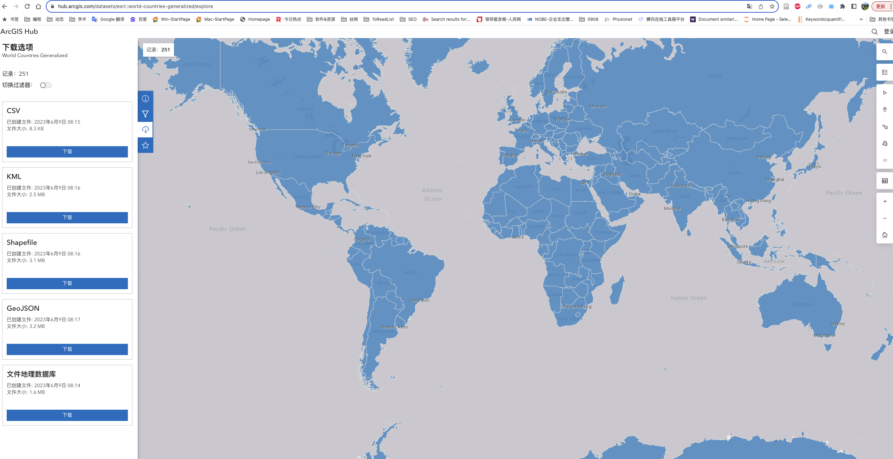
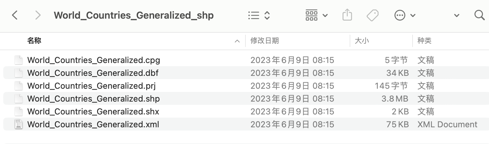
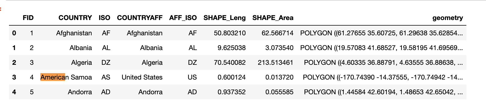
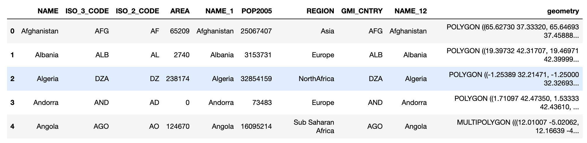
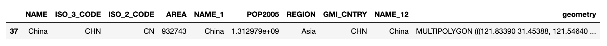
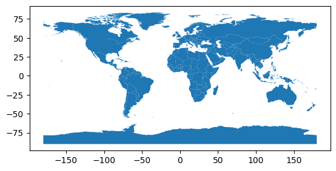
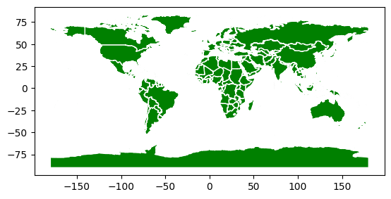
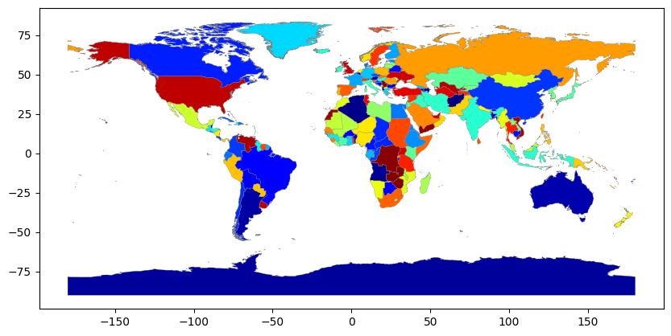
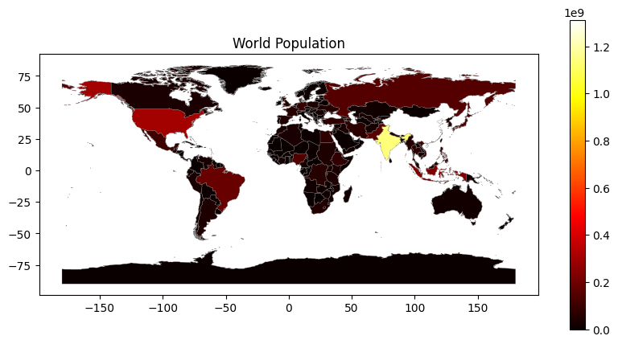
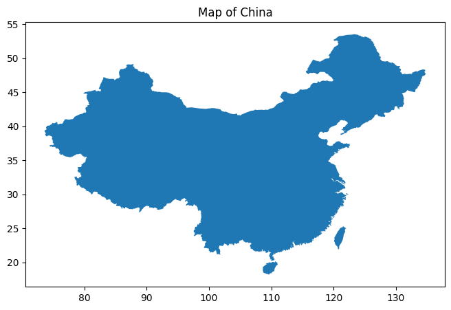

本文代码
Pandas 可能是最流行的用于数据分析的 Python 库。GeoPandas 扩展了 Pandas 的数据类型，使我们能够更轻松地在 Python 中处理地理空间数据。它目前有两种数据类型结构：GeoSeries 和 GeoDataFrame，它们分别是 pandas.Series 和 pandas.DataFrame 的子类。
GeoDataFrame 是 GeoPandas 中的核心数据结构，可以存储几何列并执行空间操作。GeoSeries 数据结构可以包含任何几何类型，例如点、线、多边形等。
总体上，GeoDataFrame 是 pandas.Series 和 geopandas.GeoSeries 的组合。
为了按照本文中的方法进行操作，您需要从 ArcGIS Hub 下载一个世界国家的 Shapefile (https://hub.arcgis.com/datasets/esri::world-countries-generalized/)。 如果您已经有自己的 Shapefile 数据，也可以使用您自己的数据。

一、安装GeoPandas
GeoPandas库是纯 Python 编写的，但是它的一些依赖库是用 C 编写的，比如 GEOS、GDAL、PROJ。有时在 Windows 上安装这些 C 库并不容易。
!pip3 install pyogrio
!pip3 install pyproj
!pip3 install rtree
!pip3 install shapely
!pip3 install geopandas
import geopandas as gpd
import warnings
warnings.filterwarnings('ignore')
print('Geopandas版本号: ', gpd.__version__)
Geopandas版本号: 0.13.2
二、读写数据
2.1 读入数据
geopandas库支持多种数据格式
- shp
- geojson
import os
os.listdir('data')
['.DS_Store',
'World_Countries_Generalized',
'World_Countries_Generalized.geojson',
'world-population.geo.json']
2.1.1 shp

import geopandas as gpd
#shp必须与shx同处于一个文件夹内
gdf = gpd.read_file('data/World_Countries_Generalized/World_Countries_Generalized.shp')
gdf.head()

2.1.2 geojson
GeoJson是Json文件，所以该类数据文件尾缀名一般为.geojson 或 .json
import geopandas as gpd
gdf2 = gpd.read_file('data/world-population.geo.json')
gdf2.head()

2.2 保存数据
我们可以使用 GeoDataFrame.to_file() 将切片或修改后的 GeoDataFrame 写回文件。
- gdf.to_file(‘shp文件路径’)
- gdf.to_file(‘GeoJson文件路径’, driver=‘GeoJSON’)
默认的文件格式是 Shapefile，但我们可以使用 driver 关键字指定其他格式。例如，让我们将 DataFrame 保存为 GeoJSON 格式。
gdf2.to_file('output/World_Countries_Generalized.shp')
gdf2.to_file('output/World_Countries_Generalized.geojson', driver='GeoJSON')
三、GeoDataFrame数据类型
让我们以 gdf GeoDataFrame 为例。大多数用于 pandas 的方法在 GeoPandas 中仍然适用。在本节中，我们只会看到一些示例。
#数据形状
gdf2.shape
(211, 10)
211行，8列，最后一列是多边形几何数据
3.1 坐标参考系统（CRS）
通常我们使用一个二维坐标系统，其中经度（垂直的南北线）和纬度（东西方向的水平线）用于标识地球表面上的位置。
GeoDataFrame 包含了将几何列中定义的多边形映射到地球表面的CRS信息。要检查CRS，我们使用 .crs 方法。
gdf2.crs
<Geographic 2D CRS: EPSG:4326>
Name: WGS 84
Axis Info [ellipsoidal]:
- Lat[north]: Geodetic latitude (degree)
- Lon[east]: Geodetic longitude (degree)
Area of Use:
- name: World.
- bounds: (-180.0, -90.0, 180.0, 90.0)
Datum: World Geodetic System 1984 ensemble
- Ellipsoid: WGS 84
- Prime Meridian: Greenwich
3.2 筛选
筛选出中国的数据
gdf2[gdf2['NAME']=='China']

3.2 中心
每个记录所代码实体(国家、省州、城市)的地理中心
gdf2.centroid
0 POINT (66.02695 33.83959)
1 POINT (20.06466 41.14350)
2 POINT (2.63167 28.16258)
3 POINT (1.58730 42.54147)
4 POINT (17.54495 -12.29359)
...
206 POINT (47.59134 15.77731)
207 POINT (20.80471 44.02662)
208 POINT (23.65690 -2.87535)
209 POINT (27.79925 -13.45302)
210 POINT (29.87045 -19.00312)
Length: 211, dtype: geometry
3.3 投影
几何数据（多边形）转换到 EPSG 3857 坐标参考系统，并计算每个多边形的中心点（centroid）。 EPSG 3857 通常被称为 「Web Mercator 投影」，用于在 Web 地图上呈现地理数据。转换为此坐标参考系统可以用于生成更适合在 Web 地图上显示的数据。
根据代码运行提示， 更改代码。
gdf2.to_crs(3857).centroid
0 POINT (7354486.896 4017736.603)
1 POINT (2233478.912 5035365.825)
2 POINT (292615.786 3302567.699)
3 POINT (176697.417 5242446.985)
4 POINT (1953402.929 -1385745.990)
...
206 POINT (5299033.934 1780605.357)
207 POINT (2315093.566 5473720.440)
208 POINT (2633886.156 -323258.251)
209 POINT (3092719.338 -1515282.005)
210 POINT (3325201.834 -2158042.585)
Length: 211, dtype: geometry
3.4 计算区域面积
数据已经包含了一个 SHAPE_Area 列。假设没有这样的列，我们可以通过几何数据来计算面积。为了获得正确的面积，您必须使用等面积投影。适用于您的代码的投影是 EPSG 6933。它是柱面等面积投影。
gdf2.to_crs(6933).area
0 6.419639e+11
1 2.875576e+10
2 2.318240e+12
3 4.702513e+08
4 1.247851e+12
...
206 3.990873e+11
207 8.856234e+10
208 2.325712e+12
209 7.521495e+11
210 3.892279e+11
Length: 211, dtype: float64
四、可视化
因为geopandas绘图功能是在matplotlib的基础上实现的，gdf.plot()一行代码就能绘图
4.1 最简地图
gdf2.plot()

4.2 更改颜色
图的颜色和边界的颜色的更改
gdf2.plot(color='green', edgecolor='white')

4.3 colormap
使用matplotlib的colormaps配色
gdf2.plot(cmap='jet', linewidth=0.2, edgecolor='gray', column='NAME', figsize=(10, 5))

4.4 Legend Colorbar
图例配色
import matplotlib.pyplot as plt
gdf2['POP2005']=gdf2['POP2005'].astype(float)
gdf2.plot(cmap='hot',linewidth=0.2, edgecolor='gray',column='POP2005',legend=True,figsize=(10, 5))
plt.title('World Population')
plt.show()

4.5 局部
使用gdf2除了可以绘制全世界地图，还可以绘制局部地图，如美国地图
gdf2[gdf2['NAME']=='China']
china_mainland = gdf2[gdf2['NAME'] =='China']
china_taiwan = gdf2[gdf2['NAME'] =='Taiwan']
fig, ax = plt.subplots(figsize=(10, 5))
china_mainland.plot(ax=ax)
china_taiwan.plot(ax=ax)
plt.title('Map of China')
